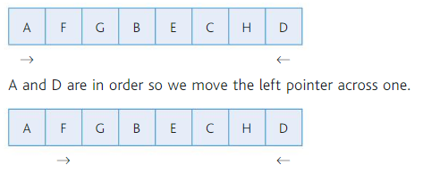
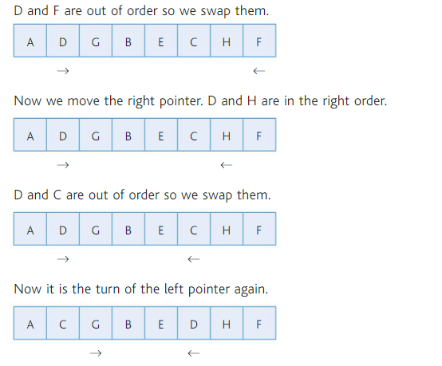

Apps
Websites
Computing Theory
- Chapter 1
- Chapter 2
- Chapter 3
- Chapter 4
- Chapter 5
- Chapter 6
- Chapter 7
- Chapter 8
- Chapter 9
- Chapter 10
- Chapter 11
- Chapter 12
- Chapter 13
History of Computing Essay
Ancient Computing
Before humans developed language or any system of government computing was unnecessary as there was no need to deal with complex calculations. Most counting could be done on the fingers or even simple tallies such as by ancient Native Americans. Another example of this is Roman numerals which are only designed to deal with number less than a few thousand. The Invention of money was something that led for the need for more complex calculations to be performed. Money is an early example of abstraction which is a fundamental of computing as it allows for more complex ideas such as farm animals, food and other commodities to be all bought and sold using a common currency. As money had a numerical value there was a need to perform calculations such as subtracting the price of an item from the total balance or even calculating taxes. Early Iranians used clay balls of different whit larger balls of clay representing larger values such as 10 or 100. This evolved into system of numerals which the Sumerians, an ancient urban civilization used in multiplication tables baked from clay. The earliest mechanical method of counting was the abacus which was a method of removing the order of magnitude by having a 1, 10 , 100 etc. column which removed the need for lots of stones and made it much easier to work with reducing human error. The Antikythera mechanism was the first mechanical computer which was used by the ancient greeks. It was discovered in 1902 in a shipwreck of the greek island and was at first believed to be too complex to have come from the time period of the ship but it was later carbon dated to around 150 BC. The device was created using knowledge of Greek astronomers. The operator would turn a crank on the device and this would turn a pointer which would give information about zodiacal band in a future date that year. This operates like a simple computer as it receives an input of the date and current zodiacal position, the gears process these inputs and give an output to the astronomer.Medieval computing
One of the first calculators was Pascal's calculator of the pascaline, invented by Blaise Pascal in 1642. It could add numbers and carry digits and could multiply or divide using repeated addition and subtraction. The success of this device was limited as the abacus could exceed the speeds of early computes even in the 20th century but Pascal was given a Royal Privilege which is the equivalent of a patent to manufacture and sell his device as it impressed the king, Louis XIV. Due to non decimal methods of counting such as currency and units of measure at that time, It was difficult to add and subtract them using decimal machines so he created different models for accounting which had dials with 12 and 20 rather than ten numbers to account for the fact that there were 20 sols to a livre and 12 deniers to a sol in the french currency at that time. Most machines around today are of this type. This machine is different to the Antikythera as it performs the calculation with the given input as it is entered in rather than when the user turns a crank arm making it much faster. The Staffelwalze, German for stepped reckoner was a calculator similar to the Pascaline but it was capable of performing all four operations addition, subtraction, multiplication and division. The device was invented by a German mathematician Gottfried Wilhelm Leibniz in 1672 but was not completed until 1694. The gears in the device were very complex and much more advanced than Pascal’s version which led to issues with reliability The machine operating by adding and subtracting many times which the pascaline could not do as it required the operator to multiply and divide manually.19th Century computing
The Difference Machine designed by Charles Babbage in 1882 was a machine used to compute tables of numbers which would be useful for engineers. The machine was accurate and fast so it meant larger tables could be produced faster without any human error which was a common problem when calculations were being performed in the heads of mathematicians. This is what inspired Babbage to invent the machine. The machine was mechanical and used a crank to perform operations which had to be turned manually. BAbbage was given 1700 pounds by the british government as producing the tables manually was expensive so they hoped this machine would be economical. By the time the government had given 17,000 for the machine, Babbage gave up on the machine and decided to instead focus on an analytical machine which would perform much more general calculations. The original device was then only used to produce logarithmic tables.Early 20th century computing-Bombe
Most computers in the early 20th century were made to break nazi encrypted messages from machines such as the enigma machine and the Lorenz cipher used by Nazis high in command. Alan turing was the leader of the team of mathematicians who cracked the enigma code and gained the edge on the Germans which is said to have considerably shortened the war. Alan Turing designed a machine called the Bombe which was able to crack the daily settings used by the germans for the enigma machine. This allowed them to know the position of German ships in the atlantic. The machine worked by using rotating drums which were all wired in the same way as the Enigma Machine meaning that all the combinations for the plugboard at the bottom could be worked through. For each combination, a current was run through one wire. If this result lead to a logical contradiction in a comparator unit the combination was not the correct one and therefore it was ruled out. On the other hand, if there was not contradictions, this was the correct code for that day and the combination could be plugged into an enigma machine plugboard and then the encrypted messages can be typed in and the machine would produce a plaintext output. Sometimes the Bombe stopped on a result which was an incorrect combination. This could happen many times each day and the operator would record the positions on each stop. These stops were eliminated by cryptanalysts. When they had eliminated enough to make it feasible to manually input these plugboard combinations, they would use a modified TYPEX machine that was designed to emulate the function of an enigma machine and they could see whether or not it produced German. This process is far more extensive than depicted in “The Imitation Game” as it took far more work even after the Bomb had run through all the possible combinations. After Turing finished his work at bletchley it had to remain a secret in case of another war so few people had heard of him until the 1970s when lots of the information was declassified. Turing was convicted of indecency in 1952 as he was a homosexual and any homosexual act was illegal at that time. He was forced to take drugs which would reduce his sexual urges and in 1954 he committed suicide leaving an apple by his bed which is said to be a reenactment of a scene from snow white.Early 20th century computing-Colossus
Colossus was a computer again at bletchley park which was used to solve the Lorenz cipher which was used by the High level German officers. It was again different to the Bombe as it used vacuum tubes or thermionic valves to perform boolean algebra rather than mechanical rotating drums to rule out combinations. This is the same technology used today as most modern programming languages use boolean algebra which is commonly referred to as true and false. The machine was designed by a telephone engineer, Tommy Flowers who incorporated Alan Turing’s work on cryptanalysis into his machine but turing did not help design it. Colossus worked by reading a piece of hole punched paper as binary code which was the encrypted message and then performing operations on that to determine the Lorenz machines settings. This code was much harder to crack than enigma as the Lorenz cipher used random key streams. This means the plaintext letters were combined with letters that were completely random generated by the Lorenz machine meaning there was no pattern in frequency of the letters. Therefore they couldn't use traditional frequency analysis to crack the codes.Computing Generations
A computer generation is a stage in the development of the modern computer, each stage of computer using a different technology to process information, mostly using the same basic logic as each other. Computers today use the same type of algebra and mathematics as those in the 50s, only the processing power has changed by orders of magnitude.First Generation-Vacuum Tubes 1940-1956
The first computers to use boolean logic used an earlier version of the transistor called vacuum tubes which looked like large light bulbs. A diode is an example of a Vacuum tube although it contains no vacuum, it only allows current to flow in one direction as electrons emitted by the heated cathode are absorbed by the positive anode. To allow for them to function like modern transistor a control grid which is an electrode which can control the flow of current through the tube. This property can be used to create logic gates such as and or and not which make up the entire computer.Second Generation - Transistors-1956-1963
Transistors perform exactly the same functions as vacuum tube but they are much more reliable, much smaller, cheaper, don't require airtight components and can last forever. Due to them being much smaller, it allowed for computers to be more accessible and meant there could be more abstraction with languages such as assembly language and even early versions of higher level languages such as COBOL(common business-oriented language) and FORTRAN(Formula Translation) which allowed simple tasks to be done in 1 or 2 lines of code and allows to programmer to avoid dealing with memory locations. It also means that code does work in terms of multiple bytes rather than dealing with only a few bits at a times eg. printing a string does not require the programmer to tell the computer how to draw each character as this can be built into a character set.Third Generation-Integrated circuits-1964-1971
Integrated circuits allowed for many transistors to be built into logic gates and to be put onto a single chip., these allowed for computers to be sold commercially as they were small enough to fit into homes. One of these was the the BBC Micro which were designed by a company by acorn commissioned by the BBC in order to improve computer literacy. The IC chips meant that a single processor could be incorporated into one single chip which decreased cost as the could be built by robots rather than people.Fourth Generation – Microprocessors 1972-2010
Microprocessors are similar to Integrated circuits but instead of just part of the processing power being on a chip, all of the CPU is one a single silicon chip. An example of this is Intel which is the leading microprocessor manufacturer with almost all commercial computers using Intel.. There are also smaller brands such as AMD. This technology has allowed for fast computing to be available commercially and has massively increased the computing industry so that almost everyone owns a computer. It has also allowed the miniaturization at a rapid rate as modern phones can have more processing power than a computer made 10 years ago. Unfortunately we are reaching a limit to the size than each individual transistor can be as 1 transistor is only a few atoms wide and quantum effects mean that they no longer work at such a scaleFifth Generation – Quatum computing/Artificial Intelligence 2010-
To overcome this problem physicists and computer scientist have to develop new ways of processing data such as quantum computing. In quantum computing, bits are not longer used, instead qubits are used(Quantum bits) which can have more than two states 0 and 1 and also it can be both at the same times(superposition). Quantum computing is useful in Cryptography as it could theoretically crack many modern public key ciphers which could create an issue for security.Seymour Papert
Seymour Papert was a Mathematician and computer scientist. He was born in south africa in 1928 and dies on the 31st July 2016. He received a PhD in mathematics in 1952 and while in University he was a prominent activist who opposed the Apartheid. He was a researcher at many European universities before becoming research associate at MIT. He was then made co-director of MIT artificial intelligence lab. His research often focussed on learning especially relating this to the use of computers. He was most famous for the development of the LOGO programming language which is often used by schools. It can be used to program a robot and tell it which way to move or can be used to draw graphics. This was called turtle graphics as the program uses a turtle object with functions such as penup and pendown which allow graphics to be drawn such as the turtle module in python. His death was caused by a condition related to his heart. His rehabilitation team who helped him with his poor speech used some the methods he devised to do with hands on learning.
Jeannette Wing
Jeannette Wing is in charge of Microsoft research and is responsible for the oversight of its core laboratories before this she was Professor of Computer Science at Carnegie Mellon University. She graduated from MIT with a degree in electrical engineering and computer science. She is a member of the formal methods community. Formal methods are about devising techniques which improve implementation of software and computer systems. She developed the Liskov substitution principle which is to do with object orientated programming and states: An object of one types properties must be the same as another object's properties if the first object is a subtype of the second. She is a promoter of computational thinking and encourages the use of techniques used by computer scientists such as abstraction and algorithms in other Industries.
Dijkstra
Edsgar Dijkstra was a Dutch computer scientist who worked in Mathemtisch Centrum in Amsterdam. He was extremely influential in computer science at the time and was one of the pioneer. Go To Statement Considered Harmful was a letter which he wrote to CACM. In this he critisised the extensive use of GOTO statements in programming languages of the time and instead advocated for more structured programming that we have today. This made code clearer and It could be more easily optimised. Three new things were added in which are subroutines which are the same as functions in python or methods in java. Another structure was for loops which would repeat the block beneath them depending on specified variables used in the brackets after the “for”. Finally switch statements were added which can get a value of a variable go through multiple statements and find the one it should perform when it finds the value of the variable. This is similar to many if else statements but is clearer
Objects
Objects are used to break down a program as they are a way of resusing code without any complication of copying and pasting the same thing. A program can be broken down into its parts for example a GUI can have a button and a title which can both be broken down into objects which can themselves be broken down into objects such. The button can be a button object and have methods in the object such as setText() and setEnabled(). The setEnabled method is unique to a button object for that could be in the button objects but setText is not Unique to a button object as it could be used in a TextView object. Therefore the button and TextView will both inherit the variables and methods from another class which store methods used by the GUI elements.
Abstractions
An abstraction is when complexity in a computer is built upon such as by using higher level programming languages. It is important to increase simplicity for the programmer and reduce the need for programmer to code things that can be done in assembly languages such as dealing with bits and choosing memory locations to store variables.
Algorithms
An algorithm is a set of instructions used by a computer of human to solve a problem. This could be a sudoku problem. A human would look at each row and eliminate the numbers that can't be in a box until there is only one left and a computer would use a similar method
Elements of Computational Thinking
Thinking Abstractly
Thinking abstractly means removing the unimportant parts of an idea or concept to leave the core idea. An example of this is a lost phone. If you need to describe it you could list every detail such as length width, shade, colour, model, operating system, certain scratches or imperfections but it is probably more useful to abstract this and only say the model and colour or perhaps the lock screen image. This helps to maximise the chance of solving a real world problem. Layering is also an example of abstraction. This means that problems are split into sub problems. Operating Systems use a large amount of Layering. It is used in the Tube map as that simplifies the routes only leaving the order of stations relative to each other and completely distorting the scale of the map. An abstraction is different from reality in that it does not include the less important "messier" parts of real life which are not as important in the abstraction. An example of an abstraction is a flight simulator which only includes the parts in a computer system which are important. It does not need to include deatails in the scenery such as the individual blades of grass beacause it is not nessacary for the functioning of the system. Instead a texture can be used which is an abstraction of a real world object.
Thinking Ahead
An example of thinking ahead is getting up in the morning and getting ready for school:
To get to school I have to think which Items I have left at school and pack accordingly making sure I have accounted for every item That I will need for that day. For example on A day I have maths or physics I need to bring a calculator. I also need to remember to charge my bike light and set my alarm. In addition to this I have to check that the chain is oiled and make sure i've remembered to pump up the tyres. Homework is another think which i need to pre-plan as it is important I have the correct piece done for the correct day so It is useful to note down on which days I have certain pieces due in.
In computer system design it is important to know what the inputes and outputs. For example, when designing a system for an online retailer, it is important to determine what outputs are needed. An example would be producing a picking list for staff. THe input would be the users order and the output would be a list of shelf numbers and locations in the warehouse. To get this list. The designer needs to be sure there are inputs for all the items on the list.
It is also important to determine preconditions. These are things that need to be ensured before a program is run.
Caching is another example of thinking ahead. It is often used in computers to store data somewhere it can be accessed quickly in case it needs to be used again. In addition to this, CPU's often prefetch instructions using algorithms that predict which instructions are likely to be needed. This can be compared to real life such as when you get money out before you get to the checkout at a shop. It is commonly used in webservers to reduce the amount of times it needs to send a webpage by storing the same webpage and sending it to multiple users rather than sending the same page to each user separately. Web browsers also cache commonly used files. This reduces the amount of data used and can save money in internet bills, especially on mobile phones. Caching does have some drawbacks. It can be very complicated to implement and when the wrong data is cached, it can be costly and very diffivult to establish the correct sequence of data.
Reusability is important in computers. An example of this is modules or libraries which can be used in programs to provide extra utilities. This reduces programming time as if you need to program a dialog in windows, you do not need to re-write the code every time, you can just use the code that windows provides which makes it much more consistant. Another example is the import in python. If you need to add extra functionality to a program, you can simply import a module with the code already written for you.
Thinking procedurally
Procedural programming means having a program decomposed into many modules and these modules can be run in any order. Eg. in a shopping website such as amazon the user could visit each page in any order and may not checkout in a particular order. They may not purchase the item immediately or they might pay with paypal instead of a credit card.
Thinking logically
Flow Charts are often used in designing programs as they show decisions and which paths a decision will lead down. A decision is made by evaluation a boolean expression such as is num1>num2. In a flowchart a decision such as an if else statement is expressed as a diamond which has an arrow leading into it from the previous instruction and two branches of yes or no. This is commonly expressed in a program as an if else statement which does exactly the same. It can also be expressed in a for loop or a while loop which also evaluates a boolean expression.
Thinking Concurrently
Concurrent means that a program is executed on different parts of the processor meaning it can be executed faster. One process can be executed on each core. This is useful when a computer needs to perform two operations at once such as running two programs at once. Without concurrency, each program would have to have time allocated to it and the computer would switch between which programs can use the processor. This speeds up processing and saves power but programs have to be secially written to run concurrently and it does not save time on programs that have to be run sequentially.
Computational methods
Features that make problems solvable by computational methods are wether the problem can be put into an algorithm which always gives to corent output for any input. It also meqans we need to decide which parts of a problem are best solved by humans and which parts by computers.
Decomposition
Decomposition is a technique in Computer science used to break down a complex problem into its constituent parts. A common example of this is object orientated programming which mean that everything is broken down into objects. An example of this could be a game where there are lots of the same object which can exist together as programming languages allow for different instances of objects. This means that instead programming each item separately you can reuse the template so that the program is broken down into smaller parts. These objects can also be built into a programming language such as a Button in Java.
Uses of Abstraction
Thinking abstractly means removing the unimportant parts of an idea or concept to leave the core idea. An example of this is a lost phone. If you need to describe it you could list every detail such as length width, shade, colour, model, operating system, certain scratches or imperfections but it is probably more useful to abstract this and only say the model and colour or perhaps the lock screen image. This helps to maximise the chance of solving a real world problem. Layering is also an example of abstraction. This means that problems are split into sub problems. Operating Systems use a large amount of Layering. It is used in the Tube map as that simplifies the routes only leaving the order of stations relative to each other and completely distorting the scale of the map.
Backtracking
Backtracking is type of algorithm to solve a problem . It works by partial solutions to a problem being built up. When a possible solution fails it will return to the last successful solution. It is useful for searching a large amount of unordered data. It is also faster than brute-force since in is able to run one test which can eliminate a large amount of possibilities. It is often used to solve crosswords and sudokus. It is used in real life when you have lost something. You will go the the last place you remember you were before you realised you lost it and look there. If you cannot find it you go to the place before that and have a look then repeat this until you find it.
Data Mining
Data mining means processing large amounts of different data which is useful in searching for links or facts between data that is not always obvious to a human. An example of this would be in a supermarket where the company wants to know what food people buy on different days and what foods a bought together. They will store each order in a database and use a program to process each item and find patterns in the data. The can even link this to other pieces of data such as weather, time, or size of the supermarket and this will enable them to optimise which items they stock and where they will stock them, for example items stocked at the back of the supermarket may be bought less when they are at the front. It is possible to do know because of large amounts of storage which can hold very large databases relatively cheaply and the processing power available today. It can also be used in the medical field as certain lifestyle factors which lead to certain diseases or conditions can be found. A database of diseases can be taken from the hospital and also a database of of these peoples working hours or lifestyle choices and data mining can be used to find links between these.
Heuristics
Heuristic means solving a problem based on past experiences. It is referred to as rule of thumb and means using what you have learnt from before to solve a problem. It does not always give the optimal solution but can give on that is good enough. An example it tying your shoelaces. You had to learn how to do it and can repeat it but there are faster ways to tie shoelaces.
Performance Modelling
Performance modelling is a way of testing a system such as a car or computer system. It works by using statistics such as average number of users which can be built into the model. It also makes use of Random functions which can simulate a process which is too complex to be built into the model and contain a large degree of uncertainty such as the geographical location of the users. The advantage of this is that it is cheap as it does not require real users to test the system and it doesn't require live data to be used which could become corrupted in a test. It also means that the computer system does not have to be built before it is tested. The model can be run with lots of different variables such as different hardware or software. It can be used on the London underground as it is not possible to experiment with timing in real trains as this would cause delays so models should be used.
Pipelining
Pipelining is the process of having connected data processing elements. A common example of this is in CPUs. The fetch decode execute cycle that CPUs perform can be done concurrently(at the same time) rather than sequentially. This means that for each clock cycle, More instructions can be run increasing the apparent speed of the CPU. It will execute one instruction at the same time as decoding the next instruction. This does not increase the latency(time to run each instruction). In can cause problems. If there is a branch in the code such as an if statement then the program will have already fetched the next instructions which it is not supposed to execute so it will have to reset the pipelining called flushing. This can cause extra unnecessary work for the CPU(10-20 clock cycles or the number of cycles from fetching to execution). This is solved with branch prediction which tries to guess which way a branch will branch. This can be more than 90% accurate. Pipelining is also used in Unix based systems which connects the input and outputs of peripherals to the program which means the programmer doesn't have to deal with them. This is another example of abstraction. In addition one program can pass its output into another program.
Visualisation
Visualisation with computers is a technique is a way of presenting complex Data into a more user friendly and easy to grasp form. A simple example of this is a graph which could show, instead of raw results in a table, A graph showing the average results per student for each subject. Strava uses this in their Global Heatmap which takes the raw GPS data of every cyclist and draws a point where each point is on a map of the world. All these individual points add up and the product is a map which users can use to see which roads or trails are ridden most. There are also third party heatmaps which can do the same for individual cyclists so you can see where you have ridden.
Problem Solving
Problem solving is important in computer science as well as daily life. There are four steps to solving most problems listed below:
Understand the Problem
It is important to understand a problem as you need to know exactly what the problem is, the data you have and you also need to be able to express it to someone else to ensure you really know how you will reach a solution. You also need to know which techniques to use such as decomposition and also how to abstract it such as creating a diagram or flowchart.
Devise A plan
You do this by breaking down the problem into smaller sub problems. In addition, You can look for patterns and use intuition(heuristics) to come to the solution. Heuristic means solving a problem based on past experiences. It is referred to as rule of thumb and means using what you have learnt from before to solve a problem. It does not always give the optimal solution but can give on that is good enough. An example it tying your shoelaces. You had to learn how to do it and can repeat it but there are faster ways to tie shoelaces. There may also be formulas that can help but if the problem is too hard, you could try a similar easier one to get an idea of what you need to do.
Carry out your Plan
This must be done very carefully, and check it is working at every stage. If it is not, it is best to rethink the whole thing or abandon the plan rather then keep going and reaching a dead end.
Look over and evaluate what you have done
Evaluating can help you learn from your mistakes and ensure you do not make the mistake next time leaving yourself with more time to make further improvements. It will also be useful as you can read over your evaluation and use some of the techniques you have used in solving that problem to solve another.
Programming Techniques
Programming Constructs
Sequence
Sequence is when code is run in order, one line after the other and does not branch of to another part of the code

Selection
Selection means that the code will evaluate a statement and if it is true it will jump to one line else it jumps to another line in the program. An example would be evaluating whether one number is bigger than the other and printing something if it is true.

Iteration
Iteration is the same as repetition and means that a block of code is run over and over until a condition becomes false.

There are a few different types of iteration. A while loop repeats until a statement becomes false. This could be one number bigger than another. A for loop is similar but will automatically increment a variable and will stop looping when a statement which uses this variable becomes true. This is useful for looping through an array or list. A repeat loop is not used in modern programming languages but will repeat forever until it runs a bit of code which states it should “break”. This means it “breaks” out of the loop and continues running the code after the loop
Recursion
Recursion is when a function or procedure calls itself. It is a useful technique used to break down a problem into lots of smaller functiuons. An example is the factorial function which used recursion. Binary seach also uses recursion. This is an example of divide and conquer. It is important to ensure that the program has an eventual endpoint so that it does not loop forever eventual producing a stack overflow error.
Global and Local Variables
A local variable is one that is used within a function or class which usually cannot be accessed from outside the class. A global variable is one that is declared outside of classes and is the same for the whole program. Classes can use Global variable but it will only change the value within the class as a local variable.
Functions & Procedures
Functions and procedures are both examples of subroutines. Functions require a value to be returned while procedures just run code but do not have to return a value. Passing parameter means that a function is given a value in its open brackets which it can use. Passing by reference means that the function is given the memory location of the value in code and if that value is updated outside the function it will be updated in the code. If you pass by value then the value of the the variable is given to the function and it has its own copy
IDEs
IDE stands for integrated development environment. Common features of IDEs are built in compilers which will automatically compile the programmer's code when it is run. The will also have a syntax highlighter which colours code according to what the user types. Variables will be a different colour to strings or integers. It can also highlight incorrect syntax red.
Searching Algorithms
This section is about algoritms for finding items. The second section is about sorting items into ordered lists. All the python code will be linked at the bottom of the document.
Linear Search
The following Pseudocode shows each step of a linear search.
The following Image shows a worked example of the algorithm.
The flowchart shows each step and this is what I used to create the python program.

Binary Search
The following Pseudocode shows each step of a bina search.
The following Image shows a worked example of the algorithm.
The flowchart shows each step and this is what I used to create the python program.

Evaluation of the searching algorithms
The linear search is the least efficient of the the searching algorithms. On average for a list of n numbers it will take n+1/2 if the number you are searching for is in the list once. If the number is in the list more than once than the expected number of iterations is n+1/k+1 where k is the number of times the item appears in the list. It is only useful on short lists which are unsorted where the item is expected to appear close to the beginning of the list. It will work on unsorted data unlike the binary search. In big O notation this is O(n). This means that the execution time is directly proportional to the size of the data. If the size of the data it is searching through doubles, it will take twice as long if the size of the data it is searching increased. The big O notation is used to describe the worst case scenario and not the average time taken. This is because the average time will be different for different types of data. Using big O notation means the programmer can see the maximum time the program could possibly take to execute. Pseudocode for the linear search can be easily recognised as it will be a simple loop through the array checking whether each index is equal to the target value.
Binary search finds a value in a sorted array. It is more efficient than a linear search as it can quickly ignore large amounts of data that does not have the number in. The disadvantage of this is that the data must be sorted and if it is unsorted it will not work. The maximum time it will take is O(log2(n)). This is because it is dividing in half twice. The number of times it must divide in half is 2 to the n. Eg searching an array of 1024 values, the maximum number of divides it will do is log2(1024) which is 10. Pseudo code for binary search is simply a function which divides an array into two and checks whether the middle element is less or more than the target value. If it is larger, it will use the lower half of the array and repeat this step on that. There will be two if statements and an else which will be executed when it has found the target value.
BubbleSort
Here is an image showing the PseudoCode for a bubble Sort. The python code is linked at the bottom
InsertionSort
Here is an image showing the PseudoCode for an Insertion Sort. The python code is linked at the bottom
MergeSort
Here is an image showing the PseudoCode for a Merge Sort. The python code is linked at the bottom
The following Image shows a worked example of the algorithm.

QuickSort
Here is an image showing the PseudoCode for a Merge Sort. The python code is linked at the bottom
The following Image shows a worked example of the algorithm.
 Pathfinding Algoritms
Dijkstras Algorithm
Here is a link to a presentation explaining how Dijkstra's Algorithm works
A* Algorithm
Here is a link to a pdf explaining how the A* Algorithm works
Evaluation of the sorting algorithms
The bubble sort is a very inefficient way of sorting data. It works by taking to first two values and ordering them then moving on to the second and third and sorts them. Then it continues this process for every item in the list. This process is repeated on the list for every item except the last which will always be the biggest item. The next time it repeats it it will not compare the last two then three then four items in the list.eventually the whole list will be sorted but as it has to compare the same numbers more than once it is extremely inefficient. After each pass after the point where the last element is swapped every value after this is sorted so it can be optimised to stop checking after it reaches this point in the next pass. . It is useful in computer graphics where there is a list of x coordinates with only one item in the list out of place so it only needs to run through the list once or twice. It is very inefficient compared to insertion sort on random data and is rarely used on modern cpus... Despite this it is more efficient when sorting mostly sorted data. In big O notation this is O(n2) which is because it iterates through the loop n times for a loop of n items. As the big O describes the growth rate of the function and not the actual amount of processes it is n2 because it has to loop n items in the worst case scenario. Pseudocode for a bubble sort is recognised by an outer loop through the array and an inner loop which loops through the array but stops when it has reached the sorted half of the array.
The insertion sort has the same growth rate as insertion sort but is more efficient. It is useful as i t can sort lists as it receives them rather than waiting for the whole list then sorting, this is because it works by taking the next value of an unsorted list and putting this into a new list which is already sorted. This means it is O(n2) in big O notation which is the same as the bubble sort but it is still much faster to sort most lists. This is because big O notation describes the growth rate of a function, not the actual efficiency(all constants and lower terms of n are ignored). The length of time they take to run will grow at the same rate for both functions. Pseudocode for this sort will be a loop through the array which inserts each element into the sorted part by shifting all the times larger than it to the right.
The merge sort is more efficient than the previous two sorts. It works by dividing the list into lists on 1 element and recombining each into lists of two then four then eight etc until you have the full sorted list. It is written as O(nlog n) in big on notation. It combines lists in the same way as insertion sort but still is more efficient when sorting lots of data. The Pseudocode for the merge sort will look similar to insertion sort but it will divide the list up many times and will also us recursion to recombine the lists(it calls itself).
The quicksort is also very efficient. It takes the first item in the list and uses it as the pivot. It then puts all the smaller items to the left of it and all the larger items to the right. It again chooses a new pivot in both of these sublists and repeats the process. It has an average case of O(nlog(n)) as it makes log n pivots, similar to the binary search. It works well in most cases but can be inefficient when the pivot happens to be the largest element each time.The Pseudocode for quicksort looks will often be recursive as it has to perform the same function on the smaller partitioned(split up) lists.
Python Demonstrations
Types of Programming language
Paradigms
A paradigm is a certain way of thinking about something. A paradigm in programming is a classification of programming languages which is based on the style of computer programming that they are used for.
Procedural programming is when instructions are given in a sequence and functions can be run to give an output. Programs are broken down into smaller functions which can use sequence or selection or iteration. Functional languages on the other hand are more like mathematical functions which return a value and a functional language does not have to be run in a specific order. The output is always the same as long as the inputs are the same. In Logic Programming a set of facts is given and certain rules. These are used to give an output based on these inputs. A Commonly used Logical language is Prolog.
Assembly and LMC
Assembly language is used by processors. It is able to be run directly on a CPU and only needs to be compiled into machine code which is very simple to do and can be done by hand. Each instruction written in assembly such as ‘ADD’ has a corresponding representation in binary. This is called a mnemonic and instruction sets can have hundreds of these. Each instruction in assembly has a one to one relationship with the processor's instruction set so in only works on that specific type of processor. This is different to high level languages which can have instructions which build on many of the lower level functions such as calculating a square root is one command whereas in assembly this would be many lines.
LMC was designed to to teach students how Assembly and low level languages work using a simplified base 10 model of a computer with an instruction set reduced to 11 core functions.
Modes of addressing memory
Immediate
Immediate addressing is when the value of the operand is used as the address. If you write LDA 6, 6 will be loaded into the accumulator and it will not check memory locations.
Direct
Direct Addressing means loading the value in the memory address represented by the operand. Eg. in the LMC, LDA 6 means load the value in the sixth memory location into the accumulator.
Indirect
Indirect Addressing is when the value of the operands memory address is a pointer to another location which it will load into the accumulator. It allows the program to use a much wider range of memory locations.
Indexed
This is useful for accessing an array as it obtains the operand by adding the value in a starting index value and adds a constant to it. By incrementing or decrementing the value of the index, different elements can be accessed. The constant and the index are defined in the instructions.
OOP
Classes and objects
In OOP a class is a template for an object. A class can contain methods(functions) and variables which each instance or object of the class can use. There can be multiple instances or objects which are based on a single class. An example of this would be a class for animals which can have many objects that use the same functions such as walk or make a noise. A class can have attributes such as height, colour etc.
Inheritance
Inheritance is when a class “inherits” from another. It uses the parent methods and variables. This could be used if you have a general type of object that did similar things but needed subgroups within these groups to perform tasks specific to a certain type of object. In Java you can use the keyword extends which allows the subclass to use the methods and variable of the parent class.
Polymorphism
Polymorphism is when a method or function can do a different thing based on different parameters. The function will work in a similar way, regardless of what subclass the parameter has, as long as the parent class is the same. This is called parametric polymorphism. Another type of polymorphism is subtyping, when lots of classes can be subtypes of a parent class.
Encapsulation
Encapsulation is a method of setting and getting variables from an object using methods rather than simply setting the variable as the variable is set to private. The methods for setting the variable can be modified to ensure that the variable entered is in the correct format. This ensures that other methods cannot modify variable with an invalid value. An example of this would be setting a percentage to more than 100 perecent. The method can tell the user that the value set was invalid.
Software
Types of Operating System
- Multi-Tasking OS:Multitasking operating systems can run more than one program at once and does this by sharing the processor time between different programs. It gives the illusion that many tasks are running at once when in fact, only one instruction can run at any time.
- Multi-User OS A multi user OS allows lots of users to log on to one PC and use it at once. Users do not have to log off before another user logs on. An example of this is a server which allows lots of remote users to have access.
- Distributed OS: A distributed OS is one which runs across lots of independant computers, each one performing a set of tasks
- Embedded OS:An embedded OS is run on embedded computer systems such as in kitchen appliances and in cars or vehicles. They are designed to be as efficient as possible and are usually real time operating systems.
- Real-time OS: A real time OS is one which process data as soon as it comes in without any delay. This is important in devices such as satellites or planes which need to respond immediately to instructions from the pilot.
Scheduling
There are many ways of scheduling which pages to run. Here are a few of them. RR stands for round robin. It means that every process has a fixed amount of time. If the process isn't finished in its time it has to wait for its turn again. FCFS stands for first come first served. In this algorithm, The process that requests time on the CPU first is given its turn and any other program is put to the back of the queue and have to wait for all the programs in front of them to finish first. SJF means that jobs are sorted into the queue based on the time they are expected to take STR means shortest time remaining this algorithm schedules the processes which will take the shortest time to execute first. If another process is added which takes shorter than the one currently being executed, This process will run instead. MFQ is a multilevel feedback queue. The algorithm switches jobs between queues which have different priorities. The job will be put in one of these queues depending on its behavior.
Interrupts
nterrupts & Polling The CPU needs to know when a device needs its attention. There are two ways of doing this: Interrupts and Polling.
Polling is when the CPU keeps checking each peripheral to see if it needs attentions. This is a waste of the CPU’s time. Imagine if a teacher went round each individual student in the whole class to see if they had a question, continuously throughout a lesson, no work would get done.
The alternative is for the student to politely interrupt the teacher.An interrupt will have a priority indicating how urgently it requires attention. When an interrupt is raised, the OS runs the relevant Interrupt Service Routine (ISR).
Interrupt Service Routines (ISR) When a peripheral or software routine requires attention, an interrupt is raised to tell the CPU. Each interrupt has a priority level. If its priority is higher than the process currently being executed it needs to be serviced first. The OS has ISRs that will determine what happens when a particular interrupt is carried out.
At the end of each fetch-decode-execute cycle, the processor checks to see if there are any interrupts. If there are and they are of a higher priority than the current task the following steps are carried: The contents of the program counter and the other registers are copied to an area of memory called a stack. The relevant interrupt service routine can then be loaded by changing the program counter to the value where the ISR starts in memory. When the the interrupt service routine is complete, the previous values of the programs counter and other registers can be restored from memory into the CPU.
It is possible that while one interrupt is running it can be interrupted by a Interrupt Service Routine of higher priority. In this case the interrupt currently being serviced is also added to the stack in memory. Once the interrupt is finished assuming this also has not been interrupted by another ISR, the previous interrupt will be restored back into the CPU, when this has finished then the previous task will be loaded back into the CPU.
Virtual Machines
It is possible to write a program that has the same functionality as a physical computer. We call such programmes virtual machines.
Common use of virtual machines is to run operating systems within another operating system. This might be because a program is needed that will not run on the host operating system or it might be because it offers a convenient way to test a program being developed on multiple platforms.
Because virtual machines are just programs and data, they have advantages over physical machines. they can be backed up and duplicated and more than one can run at any one time on the physical machine. It is for these reasons that many organisations are virtualising their network infrastructure, making their servers a group of virtual machines running from a cluster of physical machines.
Another common use of virtual machine is for interpreting intermediate code. When programs are fully compiled they can only run on one architecture (CPU) that has the same instruction set. Interpreted code needs the computer to have the interpreter installed for the program to run. Intermediate code offers a compromise between these two approaches. When using a virtual machine the compiler will partially convert the source code into something called bytecode. This isn't machine code but is much more efficient representation than the original source code. Because it isn't machine code it can't be run directly on the processor. Instead, a virtual machine is used to read the code. Any device with this virtual machine can read this intermediate code. This means code can be highly portable. As hardware becomes cheaper and more powerful, virtual machines are likely to become more commonplace.
BIOS
BIOS stands for basic input/output system. When a computer is first switched on it looks to the BIOS to get it up and running, and so the processor’s program counter points to the BIOS’s memory.
The BIOS will usually first check that the computer is functional, memory is installed and accessible and the processor is working. This is called the power on self test, POST. Once it has done this, it can use the boot loader program to load the operating system kernel into memory. The BIOS is stored on flash memory so that it can be updated. This also allows setting such as boot order of disks to be changed and saved by the user.
Open and closed source software
When software is sold commercially it is compiled to machine code. This means users can run it without having to translate it. Most users would have no need for the program source code. It would not be wise for the company making software to supply it as it would mean uses could amend their software and steal their work.
There is a type of software called open source software OSS where source code is made publicly available. This means that users can modify software to suit their needs. It also means that anyone can have a part in the development of the software. One of the best known pieces of open source software is the operating system Linux. There are many variants of Linux and it was used as a basis for the Android operating system.
There are many advantages and disadvantages to open source software. One of the biggest advantages is price. As the source code is freely available, there would be little point in charging for it, therefore most open source software is free. Some companies make money by offering the software for free then offering paid support contracts to businesses that want it.
Open source projects tend to be supported by armies of volunteer coders and testers. They are often very competent, but they may not have the resources organisations have available and also the dedicated programming teams. For this reason, open-source projects can lack the polish of their commercial, closed source counterparts. On the other hand, large open source projects may have many programmers and testers working on them, which means software can be quickly and regularly updated.
Whether open source systems are more or less secure is subject to debate. Some argue that as the source code is freely available anyone can find security holes in the code. Supporters of open source would counter this claim stating this is what makes it so secure as there are many people checking the code to identify such problems.
Applications generation
translators
A translator is a program that converts source code into machine code. This chapter will investigate the different types of translators and how they work.
Interpreters
An interpreter takes each line of high-level language program, converts it into machine code and runs it. This is useful when debugging a program as the program can start running straight away and will stop at a line if it finds an error. The downside of this is that an interpreted program runs slowly. Every time the program is run, the user has to wait for the translation of each line as well as the execution. When iterating through a loop, the interpreter may have to translate the same line many times. To run the code, the user needs access to the interpreter (it must be installed on the machine like Python’s IDLE.
Compilers
A compiler is a program that takes a program written in high level language and converts it into object code. This object code can then be distributed to anyone with compatible system without the need for any additional programs. Once the code is compiled, it can run as often as needed and much faster speed than an interpreted program. Also, if the source code were distributed commercially, people could amend it, removing anti piracy measures, debrand the product and sell it on and copy any innovative ideas into their own product, stealing the original creators hard work. As machine code is not human readable doing any of these things is much harder. Compilation of some programs can take hours if they are large and complex, but this only needs to be done the once.
Assemblers
A mnemonic helps humans remember difficult things. For example: Richard Of York Gave Battle In Vain to remember the colours of the rainbow (red, orange, yellow, green, blue, indigo, violet). To make it easier to program in a low level (assembly) language we used mnemonics. Just as a comparison look at the difference between a low level language for the x86 processor compared with a high level language written in Fortran just to print ‘Hello, World!’ to the screen.An assembler is used to convert assembly language to object code. There is a one to one relationship between the source code and the 1’s and 0’s.
Stages of compilation
Lexical Analysis
All comments and whitespace are removed from the program. Remember comments are just there for the programmers but are no use to the computer. This stage changes the high level code into a series of tokens. In the example below each block is a token. The compiler will pick out reserved words, operators, variables and constants (the words of the programming language that you can’t use). During compilation the compiler needs to keep track of the variables and the subroutines within the program. To do this it uses a symbol table. During the lexical analysis the names are added to the table. Later on the other information will be added such as the data types and scope.
Syntax Analysis
Syntax analysis checks that the code has been written to the rules of the the language. Syntax analysis will produce an abstract syntax tree (AST) that will represent the program. We will cover trees in more detail later in the course. If a token does not fit into an abstract tree then there is a problem with the syntax.
Code Generation
By this stage, the program is represented as an abstract syntax tree and the compiler has all the data it needs.. Code generation is when the compiler converts this into object code.
Optimisation
A lot of students confuse this stage with the Lexical Analysis stage, don’t make that mistake! We want our program to run as quickly as possible. The optimiser for the language will have a number of tricks that could remove lines of code that are not required, the optimiser can remove these lines and the program will run. It will also look at groups of instructions to see if they can be made smaller.
Libraries
We use libraries all the time when we are programing. When you download the latest version of Python it comes with its standard libraries that allow you to print to screen using the print function and perform IF statements as well as a thousand more things you can do with a standard install of Python. Sometimes you might want to use a specialist random function, so you would need to import the random library (module). If you are wanting to create a game you might want to use functions within the Pygame library. Pygame is not a standard module within Python so you would have to install it before you could import and use the functions (tools).
Object Code and Linkers
The linker will bring in the external code from the libraries we looked at above into place holders that you wrote in your source code for example random.randint would be a place holder where the linker would look for the randint code from the random library that you imported.
Software Development
Feasibility Study
The purpose of the feasibility study is to determine whether or not it is possible to complete the project on time and in budget. If the result of this is that it is unfeasable then it will have to be set aside for a later date.
Requirement Specification
The requirement specification is important because it allows the programmer to see a clearly defined list of exactly what features the customer needs in the program. This gives the programmer and customer assurance that the program that is being written is doing exactly what was paid for and reduces the need for refinements or more programming when everything is finished.
Methodologies
Waterfall Lifecycle
The waterfall lifecycle is a methodology where each step must be completed to start the next step. This is not very commonly used as it carries a lot of risk because if there is an issue, it will have to go back to a previous stage. It is used because of its simplicity meaning it is easy to manage and there is a clear goal or output at the end of each stage.
RAD
The RAD or rapid application development methodology is characterised by its use of prototypes, a mock up version of the final product which lacks the functionality. The main advantage of this is that the customer can see what they are getting from an early stage and feedback into the development. This methodology requires the customer to be an integral part of the process. It is better suited to smaller projects where the usability of the program matters more than the efficiency and how it works. For this reason, it does not scale well to larger projects.
Spiral Model
The spiral methodology is designed to take risks into account and is suitable for projects which involve a lot of risk. The development is done in iterations or cycles. At the end of each cycle a product is produced which is not necessarily the final product but could be a prototype. Each cycle or spiral involves four stages. The first is to determine the objectives of the current iteration and to determine what needs to be produced. The second is to identify the risks in this stage using a risk analyst which can be expensive making this more suitable to larger projects with more programmers. If there is a risk, then the stage will have to be reconsidered to avoid going over budget. The 3rd Stage is the Development and testing. This is when to programmers write their code and test that is works and that it fits in with the objectives of the stage. The final stage is to Evaluate the product produces and decide on what the next iteration will involve.
Agile Programming
Agile programming is a group of methodologies which is designed for projects where the specification is consistently changes which could be because the customer is unsure of what they want. An example of this type of methodology is Extreme programming, often abbreviated to XP. It is a model which puts most emphasis on the programming itself. The customer becomes part of the team of programmers in this type of development and can answer the questions that the developers have. It users an iterative process like RAD but the cycles are much shorter and XP produces a version of the system at the end of each iteration.A key feature of XP is that each programmer works in a pair so they can more easily spot each others mistakes and analyse each others code. In addition each unit of code is tested regularly and when complete is implemented into the project so that everyone can have access to it.
Data Types
This chapter is on data types used by computers. Computers need to be able to recognise which data is of what type so that it can perform the appropriate function. For example the addition symbol means the find the sum when the data is a float or integer but for a string, it means it needs to concatenate the strings. The main data types used by computers are as follows:
- Character - this is a letter of digit or even a control code. eg. "%, (, H, @, 4, ~"
- String - this is a sequence of characters which can make up sentances or numbers and strings of symbols which can be displayed on the screen
- Boolean - this data type is a single bit which can take the value of true or false or 1 or zero
- Integer - These are whole non decimal positive or negative numbers, for example the number of eggs in a box. Or the amount of money in monopoly
- Float - These are numbers which can have a decimal and be positive or negative.
Representing Text
A character set is the set of all letters and symbols such as digits that computers store. They are used for representing strings on the screen. A common example is Unicode which is a universal character set used on most computers in the world. The character set assigns each symbol a binary value which can be stored in memory and used to represent that character.
- ASCII was intruduced as a common standard to represent letters and symbols
- It means American Standard Character Information Interchange
- It as originally 7 bits and could represent 128 separate characters
- Extended ASCII increased this to 8 bits or 256 characters
- UNICODE originally 16 bit 65000 + characters
- The 16 bit restrictionwas lifted
- The original ASCII takes up the first 256 characters of Unicode
Boolean data
This can only take two values, 0 and 1 or true and false. It is represented by one bit in computers. It can be used to signify whether a light should be on or off or for flagging events. Eg. is the answer positive or is 5 > 23.
Positive Integers
Binary is used to represent numbers which can be operated on. It works in a similar way to the decimal system but instead of a 10^0, 10^1, 10^2 column in used Base 2, 2^0, 2^1, 2^2 etc. Each column can only take 2 values, 0 or 1. This is because computers can only compare high and low voltages and nothing else. To convert from binary to decimal you can sipply write out the binary column headings and put the binary number below. Add up the headings with 1's below to get the number in decimal.
Twos Complement
Two's Complement is used to represent negative numbers. It involves having the first place as a negative number. To convert to twos xcomplement. You simple invert a positive numbers by NOTing it the add one to it. This ensures that the answer when it is subtracted is in the same form as the input. It also gets rid of the need for a sign bit which is not a good idea as it involves mixing boolean data types with an integer data type.
Sign and magnitude
The sign and magnitude uses the first Most Significant bit as the sign and the other bits are used to represent the magnitude or absolute value of the number. The MSB is used as a boolean data type in the sign and magnitude and does not change the magnitude of the number. It is either a 1 or 0 for positive and negative.
Hexadecimal
HExadecimal is used by programmers to represent binary numbers. It is usefulas you only need 2 Hex digits to represent a byte. There is a direct relationship between each nibble(4 bits) and a hex number. To convert from hex to decimal you multiply the each digit by 16^(place value -1) then add them all together. To convert to hex you can divide by 16 and take the remainder each time. as the units then 16s then 256 place until you get 0. To convert from hext to and from binary you can simply use the fact that each nibble represents a digit and convert one digit or nibble at a time. Computers do not work in hex but it is often more conveinient for them to output a hex number instead of converting to decimal.
Images, sounds and Instructions
Images
Images are also represented in binary. We use binary to represent colour. 1 bit can represent two colours which is usually a black and white image. We can use more than two bits to represent all the colours a computer monitor can display. Using 1 byte per pixel we can represent 2^8 colours 0r 256 colours or even 16 bits to represent even more. Data which describes other data such as the image data is called metadata. Metadata is needed for images to sescibe information about width and height of the image, bits per pixel, colour depth and resolution. It also includes data which is not needed but is useful for the user to know such as a timestamp when the iamge was created and the camera make and model. An iamge with a larger size contains more picels and will take up more data. Images with a higher colour depth will take up more data as they use more bits per pixel so they can use a larger range of colours. There are tow main types of iamges. These are vector and bitmap. Bitmap means that each pixel is defined as a set colour and in a set position. When the image is resized, the pixels are resized and you will be able to see the indevidual pixels. This is called pixelation. With vecotr graphics this does not happen as iamges are made of primitive shapes such as lines and arcs. When you resize an arc, it does not loose its sharpness as there is a mathematical equation that describes the shape of it at any size.
Sound
Sound is made of continous analougue data but for the computer to store it, it needs to be in a digital binary form. To do this the sound is sampledat set intervals and the sameples are used to represent the sound. A Higher sample rate means that the sound file will be of higher quality as it will be closer to the orginal sound. The sound can never be exactly the same as analougue sound is continous. Another factor that will effect the quality of sound recorded is the bit rate. This means the size of sound data recorded per second and is usually measured in kikobits per second. A higher bitrate means that the file will be much larger. The bit rate is effected by the sample rate and also the number of bits used for each sample.
Instructions
Instructions are also stored in binary. Instructions often are made of an operator and an operand. The first part of an instruction is the operantor which tells to computer what to so on the operand. The operand often points to the data location where the data to perform the calculation on is stored. The computer has no way of determining what is supposed to be data and what is an instruction so if some data has the same bit pattern as an instruction in will perfor the instruction.
Computer arithemeric
This chapter is about performing operations on binary numbers such as addition and subtraction with positve, negative and floating point numbers.
Binary addition
To add numbers in binary you do the same as in decimal by carrying digits when they go over 1. Here is an example to demonstrate this:
Stacks
This chapter is about data structures. The first data struncture is a stack. To help understand how this words I created an object in python which behaves like a stack. It is linked below to download. The program creates a stack then performs various functions on them. A Stack is a data structure which follows the rule last in, first out which is similar to a stack of books. They are used in scheduling algorithms which are used by computers to decide which program to give processor time. There are various functions associated with stacks. One of these is push. This takes a parameter of an object or variable. It puts that object onto the stack and doesnt return anything. Another function is Pop which does the opposite. It takes the variable and removes it from the stack and returns the value of the variable. The peek function does the same but doesnt remove the variable. Fuctions such as size return the number of items in the Stack
Queues
Queues are simaler to stacks in that you can add and remove items from them. They follow the First in First out rule like a queue in real life. They are often used in computers in scheduling tasks to ensure each taks is executed in the most efficient manner. An exaple below shows exactly how they work. This is a circular Queue meaning the index of the first item in the Queue is always 0 so there wont be empty spaces. All the items are moved down in the Queue when an item is taken from the front. The second example shows in more detail what this does without using pythons built in functions.